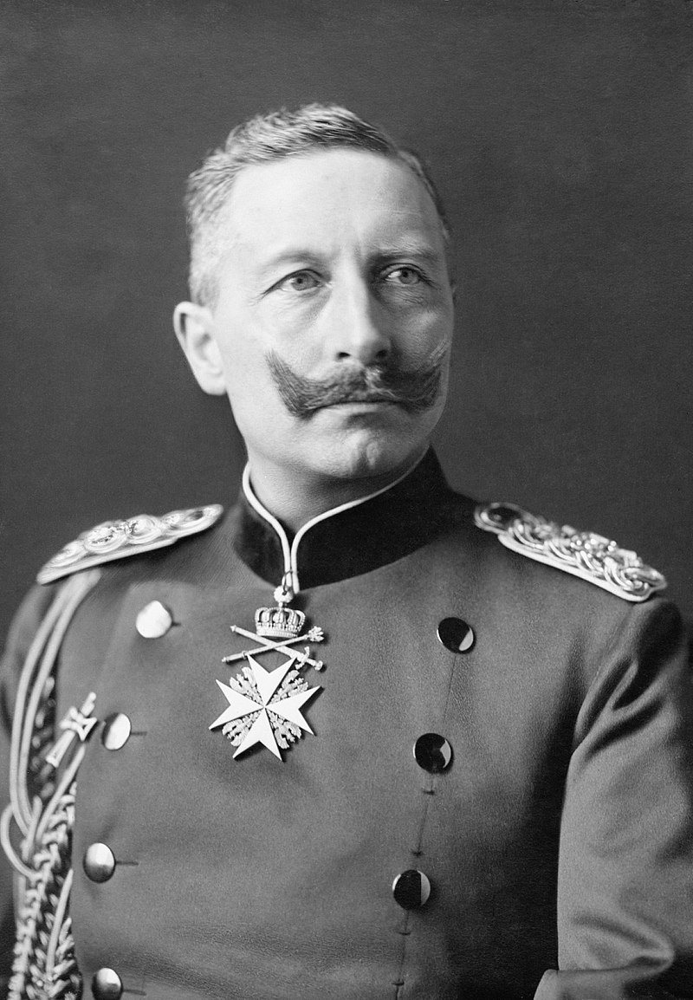

On March 9, 1888, William I passed away and the second German emperor, Frederick III, died only 99 days after his
coronation. The new emperor William II did not agree with Bismarck's foreign policies. William II was the
symbol of the new Germany, which knew no limit while Bismarck symbolized the conservative old Junker Germany.
Kaiser Wilhelm II and Bismarck quarreled over the rise of the Social Democrats in the 1890 general election and
other matters. Bismarck tried to pursuade other Prussian ministers to a strike as a last resort but the plan backfired
and he lost the support of the military and had to resign on March 18, 1890. source1

Kaiser Wilhelm II
Without Bismarck, German Empire started to push for expansion and German expansionism was
terrifying to neighboring countries because of the Germany's industrial and military capabilities.
German coal production was 277 million tons in 1914 which was just behind Britain's 292 million and
far ahead of Austria-Hungary's 47 million, France's 40 million, and Russia's 36 million.
And in 1914, Germany was producing more steel than the Britain, Russia and France combined.
In the newer industry, German industrial dominance was much more apparent. For example, German chemical firms
were producing 90% of the world's industrial dyes. Germany's share of world manufacturing production
(14.8%) was higher than Britain's 13.6% and two and a half times of that of France(6.1%).
source2
European powers were getting worried about Germany's rise as German elites like Chancellor Bülow,
Tirpitz, and Kaiser Wilhelm II himself repeatedly insisted German overseas imperialism. To contain the
German expansionism, France and Russia formed an alliance in 1894. Now the Germany would have to fight in
two fronts at the same time which Bismarck strived to prevent. Furthermore, Germany entered an
naval arms race with Britain. After the Napoleonic Wars, Britain was enjoying a splendid isolation where
it tried to avoid permanent alliance or war with other great powers. But Germany's naval expansion and
its goal to build a navy superior to the Royal Navy forced Britain to break out of the isolationist policy
and to form a Triple Entente with France and Russia. Although it was not a mutual defense treaty, still
the agreement dragged Britain into the World War I. The alliance between Austria-Hungary and Germany and the
Triple Entente between Britain, France and Russia made disputes that would otherwise be resolved locally into a
full-blown global warfare.
source3
The local disputes that could spread like a wildfire were plentiful in the Balkans in the early 20th century.
Slavic nationalism made Russia to be the protector of the Slavic nation states such as Serbia. Also,
the waning Ottoman empire further destabilized the region as Austria-Hungary officially annexed Bosnia and
Herzegovina in 1908. The Slavs who were the majority in those two countries were angered by Austria-Hungary's
annexation and Serbia was furious as it had its own plan for the region. So the stage was set when Archduke
Franz Ferdinand visited Bosnia and Herezegovina in 1914. Austria-Hungary declared war on Serbia for the
assassination of the Archduke and this dragged Germany and Russia into the war. Russia's participation meant France
and eventaully Great Britain was dragged into the conflict. 100 years after the Napoleonic Wars, Europe was in another
Great War. source4
Germany intended to strike France first and then deal with Russians because the German General Staff believed that
Russians would take a lot of time to mobilize. General Staff's plan was to move the German troops through the neutral
Belgium and attack Paris from the north. But Russian troops mobilized faster than expected and thus Germany had to
face enemies at both sides.
Also, as millions of soldiers were fighting each other in trenches that stretched hundreds of thousands of miles,
it was impossible for swift victories to be achieved through local battles. Thus, the war became much longer than expected.
Although France has lost significant amount of industrial capabilities due to the swift advance of German forces during the
early stages of the war, still France managed to reloacte its factoreis and kept on fighting. Even though Britain and her allies
cut the centeral powers from naval trades and inflicted heavy casualties, still the German empire managed to stay in the war.
As the war dragged on, it became more about the staying power than the brilliance of generals and courage of the soldiers.
In this sense, the collapse of the Russian empire due to the Russian Revolution and Lennin signing peace with Germany was a
big relief to the Central Powers.
But German U-Boat missions that attacked America civilian vessels headed toward the Allied powers and Zimmermann Telegram
incident dragged US into the war and at this point, the fate of the Central Powers was sealed. Both the Allies and the
Central Powers were in a desperate situation because they repurposed all their industries for the sole purpose of
supporting the war. French army was mutinying and German soldiers were starving. On the other hand, America was
not affected by the war until this point so America could not only support the war weary Allied countries economically but
also send fresh troops and push German army out of France and Belgium.
German high command ordered the last push before America finishes mobilizing and the last offensive failed miserably. Soon
the Germans were pushed back at an alarming rate and soldiers and civilians were rising up against the regime. Finally, with
Germany signing an armistice on November 11, 1918, world war 1 ended. source5
1. “German Empire - The Fall of Bismarck.” Encyclopedia Britannica, www.britannica.com/place/German-Empire/The-fall-of-Bismarck. Accessed 18 Dec. 2021.
2. Kennedy, Paul. “The Coming of a Bipolar World and the
Crisis of the “Middle Powers”: Part One,
1885–1918
” The Rise and Fall of the Great Powers: Economic Change and Military Conflict from 1500 to 2000, 1st Vintage Bks Edition, Jan. 1989, Vintage, 1989, p. 287
3. Kiger, Patrick. “8 Events That Led to World War I.” HISTORY, 7 Apr. 2021, www.history.com/news/world-war-i-causes.
4. Kiger, Patrick. “8 Events That Led to World War I.” HISTORY, 7 Apr. 2021, www.history.com/news/world-war-i-causes.
5. Kennedy, Paul. “The Coming of a Bipolar World and the
Crisis of the “Middle Powers”: Part One,
1885–1918
” The Rise and Fall of the Great Powers: Economic Change and Military Conflict from 1500 to 2000, 1st Vintage Bks Edition, Jan. 1989, Vintage, 1989,